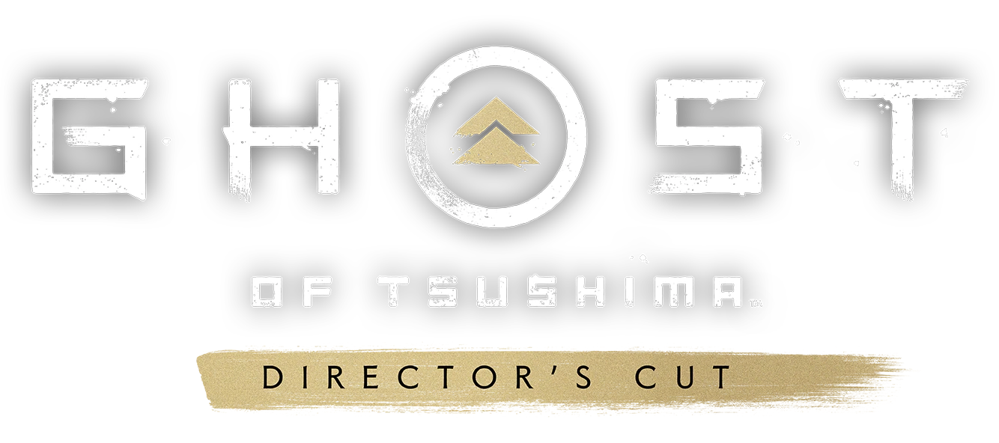

Disponível para PC, PS5 e PS4
Descubra as maravilhas ocultas de Tsushima nesse jogo de ação e aventura em mundo aberto da Sucker Punch Productions e do PlayStation Studios.
Compre JáDescubra as maravilhas ocultas de Tsushima nesse jogo de ação e aventura em mundo aberto da Sucker Punch Productions e do PlayStation Studios.
Compre JáGhost of Tsushima: Legends é uma experiência multijogador cooperativa inspirada em contos folclóricos e na mitologia do Japão. Escolha entre quatro classes únicas — Samurai, Caçador, Ronin ou Assassino — e jogue com amigos ou organize partidas online. Ghost of Tsushima: Legends pode ser baixado gratuitamente por quem possui Ghost of Tsushima, e agora está disponível para compra como jogo independente.

Inclui: